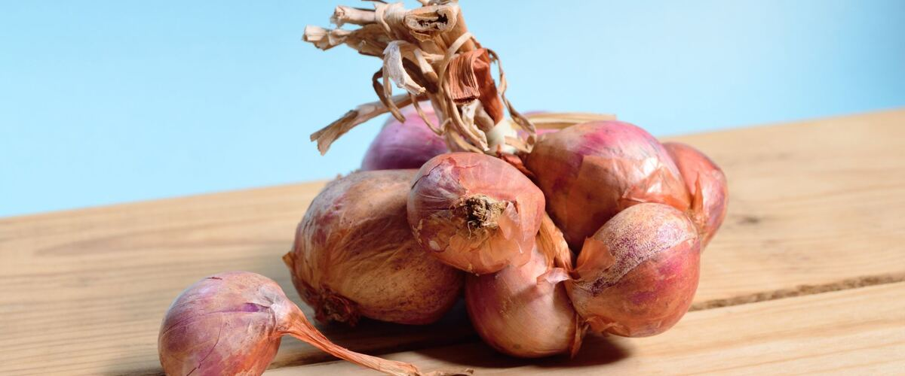

When to plant shallots in Klamath Falls, OR
Plant shallot bulbs in Klamath Falls from Sep 20 – Oct 20. They root over winter and are ready to dig the next summer. You can also plant them as early in spring as the soil can be worked.
- Difficulty
- Easy
- Sun
- Full sun
- Spacing
- 6 to 8 inches apart
- Planting depth
- Tip just at the soil surface
- Frost
- Very hardy; grows through winter
Why these dates
Like garlic, shallots size up best after a winter in the ground, so in most of the Northwest they go in during fall, after the soil cools but before it freezes hard. In Klamath Falls the first fall frost usually comes around September 18.
High desert and mountains. Central and high eastern Oregon. Frost is possible almost any month. Use row covers, wall-o-water or cloches for warm crops, and choose short-season varieties.
How to grow shallots in Klamath Falls
- Buy shallot bulbs sold for planting from a garden center or seed company.
- Loosen the soil and mix in an inch or two of compost.
- Plant them Sep 20 – Oct 20, 6 to 8 inches apart, with the tip just at the soil surface.
- Mulch lightly with straw for winter, pull weeds in spring and stop watering when the tops start to yellow.
- Harvest: Dig in summer when the tops yellow and fall over. Dry the clusters in a shady, airy spot for two weeks.
Key numbers
- Fall or earliest springPlant
- 6.0–7.0Soil pH
- 2 weeks, shady and airyCure
- 6 months or moreStores
Top care tip: Keep the bed weeded and stop watering once the tops start to yellow so bulbs cure well.
Growing notes
What makes the difference in Northwest gardens, in plain language.
Soil and feeding
Shallots grow best in loose, well-drained soil with plenty of compost. Heavy, soggy soil rots bulbs over a wet Northwest winter, so raised beds help west of the Cascades. Feed with a little nitrogen in early spring when growth resumes, and stop by late spring. Once bulbs start forming, extra nitrogen just delays them and hurts storage.
Keep beds weeded. Shallots have thin, upright leaves that can't shade out competition, and weeds steal water and nutrients from the forming cluster.
Pests and diseases
Onion maggots, the larvae of a small fly, tunnel into bulbs in cool, wet soil. Rotating to a new spot each year and covering spring plantings with row cover help. Rust shows up as orange spots on leaves in damp weather but usually doesn't hurt the harvest much.
White rot is the serious one: a white fuzzy rot at the base with tiny black specks. It lives in soil for many years, so never plant onion-family crops in an infected spot again, and only plant clean bulbs from a trusted source.
Harvest and storage
Dig shallots when most of the tops have yellowed and fallen over, usually early to midsummer. Lift the clusters gently, shake off soil and leave the tops on while they cure in a dry, shady, airy place for about two weeks. Then trim the tops and roots, separate the bulbs, and store them in a mesh bag in a cool, dry spot. Well-cured shallots often keep longer than onions. Save some of the best, firmest bulbs to replant in fall.
Common questions
When is the last frost in Klamath Falls, OR?
Typically June 9. In 9 years out of 10, frost is over by June 26. These are 1991–2020 NOAA climate normals for Klamath Falls Airport.
When are shallots ready to harvest in Klamath Falls?
Usually in early to midsummer, when the tops yellow and fall over. Dig in summer when the tops yellow and fall over. Dry the clusters in a shady, airy spot for two weeks.
Can I plant shallots from the grocery store?
Sometimes they grow, but they may be treated to stop sprouting or carry disease into your soil. Bulbs sold for planting are a safer bet and come in varieties suited to the Northwest, like French Gray.
Why are my shallots flowering?
Stress such as a cold snap after spring growth begins or a dry spell can trigger flowering. Snap off the flower stalk as soon as you see it. The bulbs are still usable but use flowered ones first, since they don't store as well.
How many shallots grow from one bulb?
Each planted bulb divides into a cluster of several new bulbs, often around five to ten depending on variety and soil. Bigger planting bulbs and wider spacing usually give bigger clusters.
Also plant in Klamath Falls around the same time
Planting dates for shallots in nearby areas
- Bend and Redmond, OR Sep 20 – Oct 20
- Burns, OR Sep 20 – Oct 20
- Prineville, OR Sep 20 – Oct 20
- Madras, OR Sep 20 – Oct 20
- Lakeview, OR Sep 20 – Oct 20
- Baker City, OR Sep 20 – Oct 20
Full planting calendar for Klamath Falls · Shallots in every city